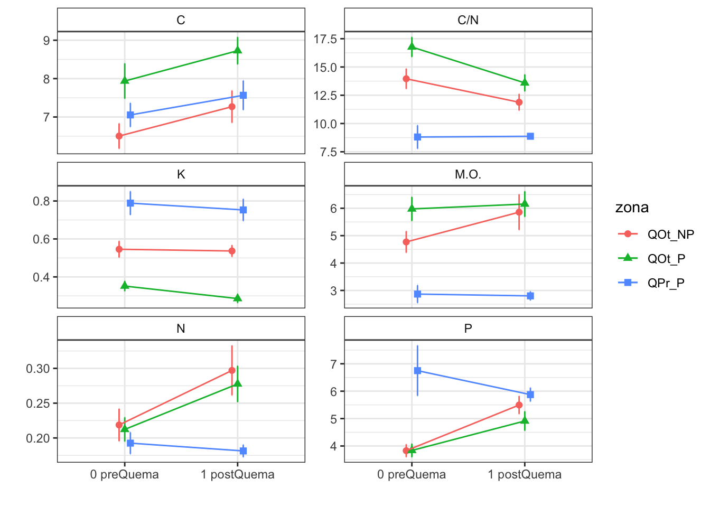

Pre- and post-fire anaylisis of soils
Last updated: 2021-09-07
Checks: 6 1
Knit directory: soil_alcontar/
This reproducible R Markdown analysis was created with workflowr (version 1.6.2). The Checks tab describes the reproducibility checks that were applied when the results were created. The Past versions tab lists the development history.
Great! Since the R Markdown file has been committed to the Git repository, you know the exact version of the code that produced these results.
Great job! The global environment was empty. Objects defined in the global environment can affect the analysis in your R Markdown file in unknown ways. For reproduciblity it’s best to always run the code in an empty environment.
The command set.seed(20210907) was run prior to running the code in the R Markdown file. Setting a seed ensures that any results that rely on randomness, e.g. subsampling or permutations, are reproducible.
Great job! Recording the operating system, R version, and package versions is critical for reproducibility.
- pkgs
- prepare-data
- session-info-chunk-inserted-by-workflowr
- unnamed-chunk-1
- unnamed-chunk-10
- unnamed-chunk-11
- unnamed-chunk-12
- unnamed-chunk-13
- unnamed-chunk-14
- unnamed-chunk-15
- unnamed-chunk-16
- unnamed-chunk-17
- unnamed-chunk-18
- unnamed-chunk-19
- unnamed-chunk-2
- unnamed-chunk-20
- unnamed-chunk-21
- unnamed-chunk-22
- unnamed-chunk-23
- unnamed-chunk-24
- unnamed-chunk-25
- unnamed-chunk-26
- unnamed-chunk-27
- unnamed-chunk-28
- unnamed-chunk-29
- unnamed-chunk-3
- unnamed-chunk-30
- unnamed-chunk-31
- unnamed-chunk-32
- unnamed-chunk-33
- unnamed-chunk-34
- unnamed-chunk-35
- unnamed-chunk-36
- unnamed-chunk-37
- unnamed-chunk-38
- unnamed-chunk-39
- unnamed-chunk-4
- unnamed-chunk-40
- unnamed-chunk-41
- unnamed-chunk-42
- unnamed-chunk-43
- unnamed-chunk-44
- unnamed-chunk-45
- unnamed-chunk-46
- unnamed-chunk-47
- unnamed-chunk-48
- unnamed-chunk-49
- unnamed-chunk-5
- unnamed-chunk-50
- unnamed-chunk-51
- unnamed-chunk-52
- unnamed-chunk-53
- unnamed-chunk-54
- unnamed-chunk-55
- unnamed-chunk-56
- unnamed-chunk-57
- unnamed-chunk-58
- unnamed-chunk-59
- unnamed-chunk-6
- unnamed-chunk-60
- unnamed-chunk-61
- unnamed-chunk-62
- unnamed-chunk-63
- unnamed-chunk-64
- unnamed-chunk-65
- unnamed-chunk-66
- unnamed-chunk-67
- unnamed-chunk-68
- unnamed-chunk-69
- unnamed-chunk-7
- unnamed-chunk-70
- unnamed-chunk-71
- unnamed-chunk-72
- unnamed-chunk-73
- unnamed-chunk-74
- unnamed-chunk-75
- unnamed-chunk-76
- unnamed-chunk-8
- unnamed-chunk-9
To ensure reproducibility of the results, delete the cache directory analysis_pre_post_cache and re-run the analysis. To have workflowr automatically delete the cache directory prior to building the file, set delete_cache = TRUE when running wflow_build() or wflow_publish().
Great job! Using relative paths to the files within your workflowr project makes it easier to run your code on other machines.
Great! You are using Git for version control. Tracking code development and connecting the code version to the results is critical for reproducibility.
The results in this page were generated with repository version 2c59a9d. See the Past versions tab to see a history of the changes made to the R Markdown and HTML files.
Note that you need to be careful to ensure that all relevant files for the analysis have been committed to Git prior to generating the results (you can use wflow_publish or wflow_git_commit). workflowr only checks the R Markdown file, but you know if there are other scripts or data files that it depends on. Below is the status of the Git repository when the results were generated:
Ignored files:
Ignored: .RData
Ignored: .Rhistory
Ignored: .Rproj.user/C369E4F4/
Ignored: .Rproj.user/shared/notebooks/3F603CAC-map/
Ignored: .Rproj.user/shared/notebooks/4E13660A-temporal_comparison/
Ignored: .Rproj.user/shared/notebooks/7ADB7089-Untitled/
Ignored: .Rproj.user/shared/notebooks/827D0727-analysis_pre_post/
Ignored: .Rproj.user/shared/notebooks/8A21BEE6-analysis_pre_post/
Ignored: .Rproj.user/shared/notebooks/A3F813C2-index/
Ignored: .Rproj.user/shared/notebooks/F2779D03-index/
Untracked files:
Untracked: analysis/analysis_pre_post_cache/
Untracked: analysis/test.Rmd
Untracked: data/spatial/lucdeme/
Untracked: map.Rmd
Unstaged changes:
Modified: data/Resultados_Suelos_2018_2021_v2.xlsx
Modified: data/spatial/.DS_Store
Deleted: index.Rmd
Modified: scripts/00_prepare_data.R
Modified: temporal_comparison.Rmd
Note that any generated files, e.g. HTML, png, CSS, etc., are not included in this status report because it is ok for generated content to have uncommitted changes.
These are the previous versions of the repository in which changes were made to the R Markdown (analysis/analysis_pre_post.Rmd) and HTML (docs/analysis_pre_post.html) files. If you’ve configured a remote Git repository (see ?wflow_git_remote), click on the hyperlinks in the table below to view the files as they were in that past version.
| File | Version | Author | Date | Message |
|---|---|---|---|---|
| Rmd | 2c59a9d | ajpelu | 2021-09-07 | update |
| html | 68358ce | ajpelu | 2021-09-07 | Build site. |
| Rmd | 6ef970d | ajpelu | 2021-09-07 | add plot |
| html | bfa8071 | ajpelu | 2021-09-07 | Build site. |
| Rmd | dc87911 | ajpelu | 2021-09-07 | include pre post analysis |
Prepare data
raw_soil <- readxl::read_excel(here::here("data/Resultados_Suelos_2018_2021_v2.xlsx"),
sheet = "SEGUIMIENTO_MUESTRAS_SUELOS") %>% janitor::clean_names() %>% mutate(treatment_name = case_when(str_detect(geo_parcela_nombre,
"NP_") ~ "Autumn Burning / No Browsing", str_detect(geo_parcela_nombre, "PR_") ~
"Spring Burning / Browsing", str_detect(geo_parcela_nombre, "P_") ~ "Autumn Burning / Browsing"),
zona = case_when(str_detect(geo_parcela_nombre, "NP_") ~ "NP", str_detect(geo_parcela_nombre,
"PR_") ~ "PR", str_detect(geo_parcela_nombre, "P_") ~ "P"), fecha = lubridate::ymd(fecha),
pre_post_quema = case_when(pre_post_quema == "Prequema" ~ "0 Pre", pre_post_quema ==
"Postquema" ~ "1 Post"))- Select data pre- and intermediately post-fire (first post-fire sampling: “2018-12-20” and “2019-05-09” for autumn and spring fires respectively)
soil <- raw_soil %>% filter(fecha %in% lubridate::ymd(c("2018-12-11", "2018-12-20",
"2019-04-24", "2019-05-09"))) %>% mutate(zona = as.factor(zona), pre_post_quema = as.factor(pre_post_quema))- Structure of the data
zona
pre_post_quema NP P PR
0 Pre 24 24 24
1 Post 24 24 24Modellize
- For each response variable, the approach modelling is
\(Y \sim zona (P|NP|PR) + Fecha(pre|post) + zona \times Fecha\)
using the “(1|zona:geo_parcela_nombre)” as nested random effects
Then explore error distribution of the variable response and model diagnostics
Select the appropiate error distribution and use LMM or GLMM
Explore Post-hoc
Plot interactions
Humedad
Check distribution

summary statistics
------
min: 2.961538 max: 23.90476
median: 11.90231
mean: 12.0709
estimated sd: 4.08543
estimated skewness: 0.1696677
estimated kurtosis: 2.93929 Normality & Homocedasticity

[1] "Variances homogeneity?"OK: Variances in each of the groups are the same (Bartlett Test, p = 0.257).[1] "Normality?"OK: residuals appear as normally distributed (p = 0.096).[1] "Normality, Random effects"Group: zona:geo_parcela_nombre
(Intercept) OK: random effects appear as normally distributed (p = 0.958).Model
Type III Analysis of Variance Table with Satterthwaite's method
Sum Sq Mean Sq NumDF DenDF F value Pr(>F)
pre_post_quema 236.42 236.416 1 129 26.1050 1.136e-06 ***
zona 1.46 0.728 2 9 0.0803 0.9235
pre_post_quema:zona 462.22 231.109 2 129 25.5190 4.593e-10 ***
---
Signif. codes: 0 '***' 0.001 '**' 0.01 '*' 0.05 '.' 0.1 ' ' 1Post-hoc
$`emmeans of pre_post_quema`
pre_post_quema emmean SE df lower.CL upper.CL
0 Pre 13.4 0.676 12.1 11.88 14.8
1 Post 10.8 0.676 12.1 9.32 12.3
Results are averaged over the levels of: zona
Degrees-of-freedom method: kenward-roger
Confidence level used: 0.95
$`pairwise differences of pre_post_quema`
1 estimate SE df t.ratio p.value
0 Pre - 1 Post 2.56 0.502 129 5.109 <.0001
Results are averaged over the levels of: zona
Degrees-of-freedom method: kenward-roger $`emmeans of zona`
zona emmean SE df lower.CL upper.CL
NP 12.4 1.09 9 9.97 14.9
P 11.9 1.09 9 9.46 14.4
PR 11.9 1.09 9 9.41 14.3
Results are averaged over the levels of: pre_post_quema
Degrees-of-freedom method: kenward-roger
Confidence level used: 0.95
$`pairwise differences of zona`
1 estimate SE df t.ratio p.value
NP - P 0.5060 1.54 9 0.329 0.9424
NP - PR 0.5579 1.54 9 0.363 0.9306
P - PR 0.0518 1.54 9 0.034 0.9994
Results are averaged over the levels of: pre_post_quema
Degrees-of-freedom method: kenward-roger
P value adjustment: tukey method for comparing a family of 3 estimates $`emmeans of pre_post_quema | zona`
zona = NP:
pre_post_quema emmean SE df lower.CL upper.CL
0 Pre 11.99 1.17 12.1 9.44 14.5
1 Post 12.86 1.17 12.1 10.31 15.4
zona = P:
pre_post_quema emmean SE df lower.CL upper.CL
0 Pre 12.45 1.17 12.1 9.90 15.0
1 Post 11.39 1.17 12.1 8.84 13.9
zona = PR:
pre_post_quema emmean SE df lower.CL upper.CL
0 Pre 15.62 1.17 12.1 13.07 18.2
1 Post 8.11 1.17 12.1 5.57 10.7
Degrees-of-freedom method: kenward-roger
Confidence level used: 0.95
$`pairwise differences of pre_post_quema | zona`
zona = NP:
2 estimate SE df t.ratio p.value
0 Pre - 1 Post -0.872 0.869 129 -1.004 0.3171
zona = P:
2 estimate SE df t.ratio p.value
0 Pre - 1 Post 1.054 0.869 129 1.213 0.2273
zona = PR:
2 estimate SE df t.ratio p.value
0 Pre - 1 Post 7.507 0.869 129 8.641 <.0001
Degrees-of-freedom method: kenward-roger 
CIC
Check distribution

summary statistics
------
min: 8 max: 24
median: 15
mean: 14.99306
estimated sd: 2.726448
estimated skewness: -0.08707462
estimated kurtosis: 3.374256 Normality & Homocedasticity

[1] "Variances homogeneity?"OK: Variances in each of the groups are the same (Bartlett Test, p = 0.313).[1] "Normality?"OK: residuals appear as normally distributed (p = 0.745).[1] "Normality, Random effects"Group: zona:geo_parcela_nombre
(Intercept) OK: random effects appear as normally distributed (p = 0.397).Model
Type III Analysis of Variance Table with Satterthwaite's method
Sum Sq Mean Sq NumDF DenDF F value Pr(>F)
pre_post_quema 31.174 31.1736 1 129 8.7568 0.003671 **
zona 40.297 20.1484 2 9 5.6598 0.025614 *
pre_post_quema:zona 19.681 9.8403 2 129 2.7642 0.066764 .
---
Signif. codes: 0 '***' 0.001 '**' 0.01 '*' 0.05 '.' 0.1 ' ' 1Post-hoc
$`emmeans of pre_post_quema`
pre_post_quema emmean SE df lower.CL upper.CL
0 Pre 15.5 0.462 11.5 14.4 16.5
1 Post 14.5 0.462 11.5 13.5 15.5
Results are averaged over the levels of: zona
Degrees-of-freedom method: kenward-roger
Confidence level used: 0.95
$`pairwise differences of pre_post_quema`
1 estimate SE df t.ratio p.value
0 Pre - 1 Post 0.931 0.314 129 2.959 0.0037
Results are averaged over the levels of: zona
Degrees-of-freedom method: kenward-roger $`emmeans of zona`
zona emmean SE df lower.CL upper.CL
NP 15.4 0.753 9 13.7 17.1
P 16.6 0.753 9 14.9 18.3
PR 13.0 0.753 9 11.3 14.7
Results are averaged over the levels of: pre_post_quema
Degrees-of-freedom method: kenward-roger
Confidence level used: 0.95
$`pairwise differences of zona`
1 estimate SE df t.ratio p.value
NP - P -1.19 1.06 9 -1.115 0.5291
NP - PR 2.33 1.06 9 2.191 0.1262
P - PR 3.52 1.06 9 3.307 0.0225
Results are averaged over the levels of: pre_post_quema
Degrees-of-freedom method: kenward-roger
P value adjustment: tukey method for comparing a family of 3 estimates $`emmeans of pre_post_quema | zona`
zona = NP:
pre_post_quema emmean SE df lower.CL upper.CL
0 Pre 15.7 0.801 11.5 13.9 17.4
1 Post 15.1 0.801 11.5 13.3 16.8
zona = P:
pre_post_quema emmean SE df lower.CL upper.CL
0 Pre 17.5 0.801 11.5 15.8 19.3
1 Post 15.6 0.801 11.5 13.8 17.3
zona = PR:
pre_post_quema emmean SE df lower.CL upper.CL
0 Pre 13.2 0.801 11.5 11.4 14.9
1 Post 12.9 0.801 11.5 11.2 14.7
Degrees-of-freedom method: kenward-roger
Confidence level used: 0.95
$`pairwise differences of pre_post_quema | zona`
zona = NP:
2 estimate SE df t.ratio p.value
0 Pre - 1 Post 0.583 0.545 129 1.071 0.2862
zona = P:
2 estimate SE df t.ratio p.value
0 Pre - 1 Post 1.958 0.545 129 3.595 0.0005
zona = PR:
2 estimate SE df t.ratio p.value
0 Pre - 1 Post 0.250 0.545 129 0.459 0.6470
Degrees-of-freedom method: kenward-roger 
% C
Check distribution

summary statistics
------
min: 3.35 max: 12.5
median: 7.57
mean: 7.509167
estimated sd: 1.9505
estimated skewness: 0.03328586
estimated kurtosis: 2.503996 Normality & Homocedasticity

[1] "Variances homogeneity?"OK: Variances in each of the groups are the same (Bartlett Test, p = 0.434).[1] "Normality?"OK: residuals appear as normally distributed (p = 0.373).[1] "Normality, Random effects"Group: zona:geo_parcela_nombre
(Intercept) OK: random effects appear as normally distributed (p = 0.623).Model
Type III Analysis of Variance Table with Satterthwaite's method
Sum Sq Mean Sq NumDF DenDF F value Pr(>F)
pre_post_quema 17.1120 17.1120 1 129 7.8770 0.005784 **
zona 5.3708 2.6854 2 9 1.2361 0.335481
pre_post_quema:zona 0.5673 0.2837 2 129 0.1306 0.877707
---
Signif. codes: 0 '***' 0.001 '**' 0.01 '*' 0.05 '.' 0.1 ' ' 1Post-hoc
$`emmeans of pre_post_quema`
pre_post_quema emmean SE df lower.CL upper.CL
0 Pre 7.16 0.405 10.9 6.27 8.06
1 Post 7.85 0.405 10.9 6.96 8.75
Results are averaged over the levels of: zona
Degrees-of-freedom method: kenward-roger
Confidence level used: 0.95
$`pairwise differences of pre_post_quema`
1 estimate SE df t.ratio p.value
0 Pre - 1 Post -0.689 0.246 129 -2.807 0.0058
Results are averaged over the levels of: zona
Degrees-of-freedom method: kenward-roger $`emmeans of zona`
zona emmean SE df lower.CL upper.CL
NP 6.89 0.669 9 5.37 8.40
P 8.33 0.669 9 6.82 9.84
PR 7.31 0.669 9 5.80 8.82
Results are averaged over the levels of: pre_post_quema
Degrees-of-freedom method: kenward-roger
Confidence level used: 0.95
$`pairwise differences of zona`
1 estimate SE df t.ratio p.value
NP - P -1.446 0.945 9 -1.529 0.3233
NP - PR -0.424 0.945 9 -0.448 0.8965
P - PR 1.022 0.945 9 1.081 0.5483
Results are averaged over the levels of: pre_post_quema
Degrees-of-freedom method: kenward-roger
P value adjustment: tukey method for comparing a family of 3 estimates $`emmeans of pre_post_quema | zona`
zona = NP:
pre_post_quema emmean SE df lower.CL upper.CL
0 Pre 6.50 0.702 10.9 4.96 8.05
1 Post 7.27 0.702 10.9 5.72 8.81
zona = P:
pre_post_quema emmean SE df lower.CL upper.CL
0 Pre 7.94 0.702 10.9 6.39 9.48
1 Post 8.73 0.702 10.9 7.18 10.27
zona = PR:
pre_post_quema emmean SE df lower.CL upper.CL
0 Pre 7.05 0.702 10.9 5.51 8.60
1 Post 7.57 0.702 10.9 6.02 9.11
Degrees-of-freedom method: kenward-roger
Confidence level used: 0.95
$`pairwise differences of pre_post_quema | zona`
zona = NP:
2 estimate SE df t.ratio p.value
0 Pre - 1 Post -0.765 0.425 129 -1.799 0.0744
zona = P:
2 estimate SE df t.ratio p.value
0 Pre - 1 Post -0.790 0.425 129 -1.858 0.0655
zona = PR:
2 estimate SE df t.ratio p.value
0 Pre - 1 Post -0.512 0.425 129 -1.205 0.2306
Degrees-of-freedom method: kenward-roger 
% Fe
Check distribution

summary statistics
------
min: 0.341 max: 3.35
median: 1.858
mean: 1.87166
estimated sd: 0.4077216
estimated skewness: 0.6162434
estimated kurtosis: 6.394979 Normality & Homocedasticity

[1] "Variances homogeneity?"Warning: Variances differ between groups (Bartlett Test, p = 0.000).[1] "Normality?"Warning: Non-normality of residuals detected (p < .001).[1] "Normality, Random effects"Group: zona:geo_parcela_nombre
(Intercept) OK: random effects appear as normally distributed (p = 0.918).Model
- Gamma
Fitting one lmer() model. [DONE]
Calculating p-values. [DONE]Mixed Model Anova Table (Type 3 tests, KR-method)
Model: fe_percent ~ pre_post_quema * zona + (1 | zona:geo_parcela_nombre)
Data: df_model
Effect df F p.value
1 pre_post_quema 1, 129 0.52 .473
2 zona 2, 9 0.69 .526
3 pre_post_quema:zona 2, 129 0.17 .845
---
Signif. codes: 0 '***' 0.001 '**' 0.01 '*' 0.05 '+' 0.1 ' ' 1Post-hoc
$`emmeans of pre_post_quema`
pre_post_quema emmean SE df asymp.LCL asymp.UCL
0 Pre 0.549 0.00599 Inf 0.537 0.561
1 Post 0.560 0.00818 Inf 0.544 0.576
Results are averaged over the levels of: zona
Results are given on the inverse (not the response) scale.
Confidence level used: 0.95
$`pairwise differences of pre_post_quema`
1 estimate SE df z.ratio p.value
0 Pre - 1 Post -0.0112 0.00566 Inf -1.979 0.0478
Results are averaged over the levels of: zona
Note: contrasts are still on the inverse scale $`emmeans of zona`
zona emmean SE df asymp.LCL asymp.UCL
NP 0.526 0.00599 Inf 0.514 0.538
P 0.607 0.00848 Inf 0.590 0.623
PR 0.531 0.00846 Inf 0.514 0.547
Results are averaged over the levels of: pre_post_quema
Results are given on the inverse (not the response) scale.
Confidence level used: 0.95
$`pairwise differences of zona`
1 estimate SE df z.ratio p.value
NP - P -0.08067 0.00609 Inf -13.241 <.0001
NP - PR -0.00486 0.00608 Inf -0.799 0.7036
P - PR 0.07581 0.00860 Inf 8.819 <.0001
Results are averaged over the levels of: pre_post_quema
Note: contrasts are still on the inverse scale
P value adjustment: tukey method for comparing a family of 3 estimates $`emmeans of pre_post_quema | zona`
zona = NP:
pre_post_quema emmean SE df asymp.LCL asymp.UCL
0 Pre 0.515 0.00543 Inf 0.504 0.526
1 Post 0.537 0.00747 Inf 0.522 0.552
zona = P:
pre_post_quema emmean SE df asymp.LCL asymp.UCL
0 Pre 0.601 0.00768 Inf 0.586 0.616
1 Post 0.612 0.01058 Inf 0.591 0.633
zona = PR:
pre_post_quema emmean SE df asymp.LCL asymp.UCL
0 Pre 0.530 0.00767 Inf 0.515 0.545
1 Post 0.531 0.01054 Inf 0.511 0.552
Results are given on the inverse (not the response) scale.
Confidence level used: 0.95
$`pairwise differences of pre_post_quema | zona`
zona = NP:
2 estimate SE df z.ratio p.value
0 Pre - 1 Post -0.02193 0.00519 Inf -4.225 <.0001
zona = P:
2 estimate SE df z.ratio p.value
0 Pre - 1 Post -0.01062 0.00737 Inf -1.442 0.1493
zona = PR:
2 estimate SE df z.ratio p.value
0 Pre - 1 Post -0.00106 0.00732 Inf -0.144 0.8853
Note: contrasts are still on the inverse scale 
% K
Check distribution

summary statistics
------
min: 0.056 max: 1.74
median: 0.4965
mean: 0.5435972
estimated sd: 0.2791576
estimated skewness: 1.262402
estimated kurtosis: 5.88111 Normality & Homocedasticity

[1] "Variances homogeneity?"Warning: Variances differ between groups (Bartlett Test, p = 0.000).[1] "Normality?"Warning: Non-normality of residuals detected (p < .001).[1] "Normality, Random effects"Group: zona:geo_parcela_nombre
(Intercept) OK: random effects appear as normally distributed (p = 0.339).Model
- Gamma
Fitting one lmer() model. [DONE]
Calculating p-values. [DONE]Mixed Model Anova Table (Type 3 tests, KR-method)
Model: k_percent ~ pre_post_quema * zona + (1 | zona:geo_parcela_nombre)
Data: df_model
Effect df F p.value
1 pre_post_quema 1, 129 2.19 .141
2 zona 2, 9 6.73 * .016
3 pre_post_quema:zona 2, 129 0.43 .651
---
Signif. codes: 0 '***' 0.001 '**' 0.01 '*' 0.05 '+' 0.1 ' ' 1Post-hoc
$`emmeans of pre_post_quema`
pre_post_quema emmean SE df asymp.LCL asymp.UCL
0 Pre 2.13 0.168 Inf 1.80 2.46
1 Post 2.37 0.173 Inf 2.03 2.71
Results are averaged over the levels of: zona
Results are given on the inverse (not the response) scale.
Confidence level used: 0.95
$`pairwise differences of pre_post_quema`
1 estimate SE df z.ratio p.value
0 Pre - 1 Post -0.243 0.107 Inf -2.275 0.0229
Results are averaged over the levels of: zona
Note: contrasts are still on the inverse scale $`emmeans of zona`
zona emmean SE df asymp.LCL asymp.UCL
NP 2.01 0.273 Inf 1.472 2.54
P 3.25 0.257 Inf 2.746 3.75
PR 1.49 0.303 Inf 0.896 2.08
Results are averaged over the levels of: pre_post_quema
Results are given on the inverse (not the response) scale.
Confidence level used: 0.95
$`pairwise differences of zona`
1 estimate SE df z.ratio p.value
NP - P -1.242 0.372 Inf -3.339 0.0024
NP - PR 0.517 0.406 Inf 1.273 0.4106
P - PR 1.759 0.396 Inf 4.445 <.0001
Results are averaged over the levels of: pre_post_quema
Note: contrasts are still on the inverse scale
P value adjustment: tukey method for comparing a family of 3 estimates $`emmeans of pre_post_quema | zona`
zona = NP:
pre_post_quema emmean SE df asymp.LCL asymp.UCL
0 Pre 1.99 0.283 Inf 1.438 2.55
1 Post 2.02 0.283 Inf 1.466 2.58
zona = P:
pre_post_quema emmean SE df asymp.LCL asymp.UCL
0 Pre 2.93 0.276 Inf 2.386 3.47
1 Post 3.57 0.301 Inf 2.982 4.16
zona = PR:
pre_post_quema emmean SE df asymp.LCL asymp.UCL
0 Pre 1.46 0.307 Inf 0.860 2.06
1 Post 1.52 0.308 Inf 0.914 2.12
Results are given on the inverse (not the response) scale.
Confidence level used: 0.95
$`pairwise differences of pre_post_quema | zona`
zona = NP:
2 estimate SE df z.ratio p.value
0 Pre - 1 Post -0.0297 0.150 Inf -0.198 0.8433
zona = P:
2 estimate SE df z.ratio p.value
0 Pre - 1 Post -0.6437 0.263 Inf -2.444 0.0145
zona = PR:
2 estimate SE df z.ratio p.value
0 Pre - 1 Post -0.0556 0.104 Inf -0.536 0.5921
Note: contrasts are still on the inverse scale 
% Mg
Check distribution

summary statistics
------
min: 0.252 max: 4.59
median: 1.4
mean: 1.579299
estimated sd: 0.8084862
estimated skewness: 1.064159
estimated kurtosis: 4.167461 Normality & Homocedasticity

[1] "Variances homogeneity?"Warning: Variances differ between groups (Bartlett Test, p = 0.000).[1] "Normality?"Warning: Non-normality of residuals detected (p < .001).[1] "Normality, Random effects"Group: zona:geo_parcela_nombre
(Intercept) OK: random effects appear as normally distributed (p = 0.525).Model
- Gamma
Fitting one lmer() model. [DONE]
Calculating p-values. [DONE]Mixed Model Anova Table (Type 3 tests, KR-method)
Model: mg_percent ~ pre_post_quema * zona + (1 | zona:geo_parcela_nombre)
Data: df_model
Effect df F p.value
1 pre_post_quema 1, 129 1.37 .245
2 zona 2, 9 3.05 + .097
3 pre_post_quema:zona 2, 129 0.84 .434
---
Signif. codes: 0 '***' 0.001 '**' 0.01 '*' 0.05 '+' 0.1 ' ' 1Post-hoc
$`emmeans of pre_post_quema`
pre_post_quema emmean SE df asymp.LCL asymp.UCL
0 Pre 0.784 0.0807 Inf 0.625 0.942
1 Post 0.749 0.0803 Inf 0.592 0.907
Results are averaged over the levels of: zona
Results are given on the inverse (not the response) scale.
Confidence level used: 0.95
$`pairwise differences of pre_post_quema`
1 estimate SE df z.ratio p.value
0 Pre - 1 Post 0.0345 0.0371 Inf 0.929 0.3528
Results are averaged over the levels of: zona
Note: contrasts are still on the inverse scale $`emmeans of zona`
zona emmean SE df asymp.LCL asymp.UCL
NP 0.759 0.133 Inf 0.498 1.02
P 0.992 0.125 Inf 0.747 1.24
PR 0.548 0.144 Inf 0.265 0.83
Results are averaged over the levels of: pre_post_quema
Results are given on the inverse (not the response) scale.
Confidence level used: 0.95
$`pairwise differences of zona`
1 estimate SE df z.ratio p.value
NP - P -0.233 0.181 Inf -1.286 0.4032
NP - PR 0.212 0.196 Inf 1.080 0.5264
P - PR 0.445 0.190 Inf 2.341 0.0504
Results are averaged over the levels of: pre_post_quema
Note: contrasts are still on the inverse scale
P value adjustment: tukey method for comparing a family of 3 estimates $`emmeans of pre_post_quema | zona`
zona = NP:
pre_post_quema emmean SE df asymp.LCL asymp.UCL
0 Pre 0.807 0.137 Inf 0.538 1.076
1 Post 0.711 0.135 Inf 0.446 0.977
zona = P:
pre_post_quema emmean SE df asymp.LCL asymp.UCL
0 Pre 0.988 0.132 Inf 0.730 1.247
1 Post 0.996 0.132 Inf 0.737 1.255
zona = PR:
pre_post_quema emmean SE df asymp.LCL asymp.UCL
0 Pre 0.555 0.146 Inf 0.269 0.841
1 Post 0.540 0.146 Inf 0.255 0.826
Results are given on the inverse (not the response) scale.
Confidence level used: 0.95
$`pairwise differences of pre_post_quema | zona`
zona = NP:
2 estimate SE df z.ratio p.value
0 Pre - 1 Post 0.09632 0.0566 Inf 1.702 0.0887
zona = P:
2 estimate SE df z.ratio p.value
0 Pre - 1 Post -0.00743 0.0841 Inf -0.088 0.9296
zona = PR:
2 estimate SE df z.ratio p.value
0 Pre - 1 Post 0.01456 0.0461 Inf 0.316 0.7523
Note: contrasts are still on the inverse scale 
C/N
Check distribution

summary statistics
------
min: 14.20907 max: 116.0373
median: 34.20672
mean: 39.50944
estimated sd: 19.74075
estimated skewness: 1.645355
estimated kurtosis: 6.246139 Normality & Homocedasticity

[1] "Variances homogeneity?"OK: Variances in each of the groups are the same (Bartlett Test, p = 0.136).[1] "Normality?"Warning: Non-normality of residuals detected (p < .001).[1] "Normality, Random effects"Group: zona:geo_parcela_nombre
(Intercept) OK: random effects appear as normally distributed (p = 0.614).Model
- Gamma
Fitting one lmer() model. [DONE]
Calculating p-values. [DONE]Mixed Model Anova Table (Type 3 tests, KR-method)
Model: c_n ~ pre_post_quema * zona + (1 | zona:geo_parcela_nombre)
Data: df_model
Effect df F p.value
1 pre_post_quema 1, 129 0.32 .574
2 zona 2, 9 0.43 .663
3 pre_post_quema:zona 2, 129 0.42 .659
---
Signif. codes: 0 '***' 0.001 '**' 0.01 '*' 0.05 '+' 0.1 ' ' 1Post-hoc
$`emmeans of pre_post_quema`
pre_post_quema emmean SE df asymp.LCL asymp.UCL
0 Pre 0.0269 0.00248 Inf 0.0221 0.0318
1 Post 0.0281 0.00250 Inf 0.0232 0.0330
Results are averaged over the levels of: zona
Results are given on the inverse (not the response) scale.
Confidence level used: 0.95
$`pairwise differences of pre_post_quema`
1 estimate SE df z.ratio p.value
0 Pre - 1 Post -0.00119 0.0016 Inf -0.743 0.4574
Results are averaged over the levels of: zona
Note: contrasts are still on the inverse scale $`emmeans of zona`
zona emmean SE df asymp.LCL asymp.UCL
NP 0.0301 0.00398 Inf 0.0223 0.0379
P 0.0275 0.00403 Inf 0.0196 0.0354
PR 0.0249 0.00402 Inf 0.0171 0.0328
Results are averaged over the levels of: pre_post_quema
Results are given on the inverse (not the response) scale.
Confidence level used: 0.95
$`pairwise differences of zona`
1 estimate SE df z.ratio p.value
NP - P 0.00257 0.00559 Inf 0.459 0.8904
NP - PR 0.00514 0.00562 Inf 0.915 0.6311
P - PR 0.00257 0.00566 Inf 0.455 0.8923
Results are averaged over the levels of: pre_post_quema
Note: contrasts are still on the inverse scale
P value adjustment: tukey method for comparing a family of 3 estimates $`emmeans of pre_post_quema | zona`
zona = NP:
pre_post_quema emmean SE df asymp.LCL asymp.UCL
0 Pre 0.0290 0.00422 Inf 0.0207 0.0373
1 Post 0.0312 0.00431 Inf 0.0227 0.0396
zona = P:
pre_post_quema emmean SE df asymp.LCL asymp.UCL
0 Pre 0.0263 0.00421 Inf 0.0180 0.0345
1 Post 0.0288 0.00429 Inf 0.0204 0.0372
zona = PR:
pre_post_quema emmean SE df asymp.LCL asymp.UCL
0 Pre 0.0255 0.00424 Inf 0.0172 0.0338
1 Post 0.0244 0.00420 Inf 0.0162 0.0326
Results are given on the inverse (not the response) scale.
Confidence level used: 0.95
$`pairwise differences of pre_post_quema | zona`
zona = NP:
2 estimate SE df z.ratio p.value
0 Pre - 1 Post -0.00215 0.00305 Inf -0.706 0.4803
zona = P:
2 estimate SE df z.ratio p.value
0 Pre - 1 Post -0.00252 0.00269 Inf -0.939 0.3479
zona = PR:
2 estimate SE df z.ratio p.value
0 Pre - 1 Post 0.00111 0.00255 Inf 0.435 0.6635
Note: contrasts are still on the inverse scale 
P
Check distribution

summary statistics
------
min: 1 max: 17
median: 4.5
mean: 5.116667
estimated sd: 2.43368
estimated skewness: 1.886353
estimated kurtosis: 8.270509 Normality & Homocedasticity

[1] "Variances homogeneity?"Warning: Variances differ between groups (Bartlett Test, p = 0.000).[1] "Normality?"Warning: Non-normality of residuals detected (p < .001).[1] "Normality, Random effects"Group: zona:geo_parcela_nombre
(Intercept) Warning: Non-normality of random effects detected (p = 0.007).Model
- Negative Binomial
Fitting one lmer() model. [DONE]
Calculating p-values. [DONE]Mixed Model Anova Table (Type 3 tests, KR-method)
Model: p ~ pre_post_quema * zona + (1 | zona:geo_parcela_nombre)
Data: df_model
Effect df F p.value
1 pre_post_quema 1, 129 3.20 + .076
2 zona 2, 9 3.81 + .063
3 pre_post_quema:zona 2, 129 4.88 ** .009
---
Signif. codes: 0 '***' 0.001 '**' 0.01 '*' 0.05 '+' 0.1 ' ' 1Post-hoc
$`emmeans of pre_post_quema`
pre_post_quema emmean SE df asymp.LCL asymp.UCL
0 Pre 1.53 0.0628 Inf 1.40 1.65
1 Post 1.68 0.0588 Inf 1.57 1.80
Results are averaged over the levels of: zona
Results are given on the log (not the response) scale.
Confidence level used: 0.95
$`pairwise differences of pre_post_quema`
1 estimate SE df z.ratio p.value
0 Pre - 1 Post -0.156 0.0744 Inf -2.103 0.0355
Results are averaged over the levels of: zona
Results are given on the log (not the response) scale. $`emmeans of zona`
zona emmean SE df asymp.LCL asymp.UCL
NP 1.52 0.0844 Inf 1.35 1.69
P 1.46 0.0870 Inf 1.29 1.64
PR 1.83 0.0776 Inf 1.68 1.98
Results are averaged over the levels of: pre_post_quema
Results are given on the log (not the response) scale.
Confidence level used: 0.95
$`pairwise differences of zona`
1 estimate SE df z.ratio p.value
NP - P 0.0548 0.121 Inf 0.451 0.8938
NP - PR -0.3116 0.114 Inf -2.734 0.0172
P - PR -0.3664 0.116 Inf -3.147 0.0047
Results are averaged over the levels of: pre_post_quema
Results are given on the log (not the response) scale.
P value adjustment: tukey method for comparing a family of 3 estimates $`emmeans of pre_post_quema | zona`
zona = NP:
pre_post_quema emmean SE df asymp.LCL asymp.UCL
0 Pre 1.34 0.1122 Inf 1.12 1.56
1 Post 1.70 0.0998 Inf 1.50 1.90
zona = P:
pre_post_quema emmean SE df asymp.LCL asymp.UCL
0 Pre 1.34 0.1165 Inf 1.11 1.57
1 Post 1.59 0.1053 Inf 1.38 1.79
zona = PR:
pre_post_quema emmean SE df asymp.LCL asymp.UCL
0 Pre 1.90 0.0936 Inf 1.72 2.08
1 Post 1.76 0.0989 Inf 1.57 1.96
Results are given on the log (not the response) scale.
Confidence level used: 0.95
$`pairwise differences of pre_post_quema | zona`
zona = NP:
2 estimate SE df z.ratio p.value
0 Pre - 1 Post -0.361 0.129 Inf -2.808 0.0050
zona = P:
2 estimate SE df z.ratio p.value
0 Pre - 1 Post -0.247 0.138 Inf -1.790 0.0734
zona = PR:
2 estimate SE df z.ratio p.value
0 Pre - 1 Post 0.139 0.114 Inf 1.217 0.2235
Results are given on the log (not the response) scale. 
MO
Check distribution

summary statistics
------
min: 0.44 max: 12.91
median: 4.4
mean: 4.737431
estimated sd: 2.507076
estimated skewness: 0.6914957
estimated kurtosis: 2.846614 Normality & Homocedasticity

[1] "Variances homogeneity?"Warning: Variances differ between groups (Bartlett Test, p = 0.000).[1] "Normality?"Warning: Non-normality of residuals detected (p = 0.036).[1] "Normality, Random effects"Group: zona:geo_parcela_nombre
(Intercept) OK: random effects appear as normally distributed (p = 0.837).Model
- Gamma
Fitting one lmer() model. [DONE]
Calculating p-values. [DONE]Mixed Model Anova Table (Type 3 tests, KR-method)
Model: mo ~ pre_post_quema * zona + (1 | zona:geo_parcela_nombre)
Data: df_model
Effect df F p.value
1 pre_post_quema 1, 129 1.35 .247
2 zona 2, 9 20.37 *** <.001
3 pre_post_quema:zona 2, 129 1.04 .357
---
Signif. codes: 0 '***' 0.001 '**' 0.01 '*' 0.05 '+' 0.1 ' ' 1Post-hoc
$`emmeans of pre_post_quema`
pre_post_quema emmean SE df asymp.LCL asymp.UCL
0 Pre 0.244 0.0152 Inf 0.215 0.274
1 Post 0.233 0.0149 Inf 0.203 0.262
Results are averaged over the levels of: zona
Results are given on the inverse (not the response) scale.
Confidence level used: 0.95
$`pairwise differences of pre_post_quema`
1 estimate SE df z.ratio p.value
0 Pre - 1 Post 0.0117 0.0177 Inf 0.660 0.5094
Results are averaged over the levels of: zona
Note: contrasts are still on the inverse scale $`emmeans of zona`
zona emmean SE df asymp.LCL asymp.UCL
NP 0.194 0.0186 Inf 0.157 0.230
P 0.168 0.0176 Inf 0.133 0.202
PR 0.354 0.0254 Inf 0.305 0.404
Results are averaged over the levels of: pre_post_quema
Results are given on the inverse (not the response) scale.
Confidence level used: 0.95
$`pairwise differences of zona`
1 estimate SE df z.ratio p.value
NP - P 0.0261 0.0253 Inf 1.034 0.5556
NP - PR -0.1608 0.0312 Inf -5.156 <.0001
P - PR -0.1870 0.0307 Inf -6.084 <.0001
Results are averaged over the levels of: pre_post_quema
Note: contrasts are still on the inverse scale
P value adjustment: tukey method for comparing a family of 3 estimates $`emmeans of pre_post_quema | zona`
zona = NP:
pre_post_quema emmean SE df asymp.LCL asymp.UCL
0 Pre 0.213 0.0231 Inf 0.168 0.258
1 Post 0.174 0.0206 Inf 0.134 0.215
zona = P:
pre_post_quema emmean SE df asymp.LCL asymp.UCL
0 Pre 0.170 0.0204 Inf 0.130 0.210
1 Post 0.165 0.0201 Inf 0.126 0.205
zona = PR:
pre_post_quema emmean SE df asymp.LCL asymp.UCL
0 Pre 0.350 0.0330 Inf 0.286 0.415
1 Post 0.359 0.0337 Inf 0.293 0.425
Results are given on the inverse (not the response) scale.
Confidence level used: 0.95
$`pairwise differences of pre_post_quema | zona`
zona = NP:
2 estimate SE df z.ratio p.value
0 Pre - 1 Post 0.03837 0.0233 Inf 1.648 0.0993
zona = P:
2 estimate SE df z.ratio p.value
0 Pre - 1 Post 0.00480 0.0201 Inf 0.239 0.8111
zona = PR:
2 estimate SE df z.ratio p.value
0 Pre - 1 Post -0.00816 0.0432 Inf -0.189 0.8502
Note: contrasts are still on the inverse scale 
% N
Check distribution

summary statistics
------
min: 0.0427 max: 0.634455
median: 0.2104425
mean: 0.2299281
estimated sd: 0.1176054
estimated skewness: 1.283039
estimated kurtosis: 4.846892 Normality & Homocedasticity

[1] "Variances homogeneity?"Warning: Variances differ between groups (Bartlett Test, p = 0.000).[1] "Normality?"Warning: Non-normality of residuals detected (p < .001).Model
Beta (glmmADBM)
Beta glmmTMB
Post-hoc
$`emmeans of pre_post_quema`
pre_post_quema emmean SE df lower.CL upper.CL
0 Pre -1.31 0.0710 136 -1.45 -1.171
1 Post -1.10 0.0678 136 -1.24 -0.968
Results are averaged over the levels of: zona
Results are given on the logit (not the response) scale.
Confidence level used: 0.95
$`pairwise differences of pre_post_quema`
1 estimate SE df t.ratio p.value
0 Pre - 1 Post -0.21 0.0968 136 -2.170 0.0318
Results are averaged over the levels of: zona
Results are given on the log odds ratio (not the response) scale. $`emmeans of zona`
zona emmean SE df lower.CL upper.CL
NP -1.11 0.0827 136 -1.27 -0.947
P -1.12 0.0828 136 -1.28 -0.953
PR -1.39 0.0882 136 -1.57 -1.219
Results are averaged over the levels of: pre_post_quema
Results are given on the logit (not the response) scale.
Confidence level used: 0.95
$`pairwise differences of zona`
1 estimate SE df t.ratio p.value
NP - P 0.00552 0.116 136 0.048 0.9988
NP - PR 0.28266 0.120 136 2.362 0.0510
P - PR 0.27714 0.120 136 2.315 0.0571
Results are averaged over the levels of: pre_post_quema
Results are given on the log odds ratio (not the response) scale.
P value adjustment: tukey method for comparing a family of 3 estimates $`emmeans of pre_post_quema | zona`
zona = NP:
pre_post_quema emmean SE df lower.CL upper.CL
0 Pre -1.282 0.121 136 -1.52 -1.043
1 Post -0.940 0.112 136 -1.16 -0.718
zona = P:
pre_post_quema emmean SE df lower.CL upper.CL
0 Pre -1.269 0.120 136 -1.51 -1.031
1 Post -0.964 0.113 136 -1.19 -0.741
zona = PR:
pre_post_quema emmean SE df lower.CL upper.CL
0 Pre -1.384 0.124 136 -1.63 -1.140
1 Post -1.403 0.124 136 -1.65 -1.157
Results are given on the logit (not the response) scale.
Confidence level used: 0.95
$`pairwise differences of pre_post_quema | zona`
zona = NP:
2 estimate SE df t.ratio p.value
0 Pre - 1 Post -0.3425 0.164 136 -2.086 0.0388
zona = P:
2 estimate SE df t.ratio p.value
0 Pre - 1 Post -0.3055 0.164 136 -1.860 0.0650
zona = PR:
2 estimate SE df t.ratio p.value
0 Pre - 1 Post 0.0182 0.174 136 0.104 0.9171
Results are given on the log odds ratio (not the response) scale. 
% Na
Check distribution

summary statistics
------
min: 0.005 max: 0.25
median: 0.0355
mean: 0.04798611
estimated sd: 0.0382072
estimated skewness: 2.52624
estimated kurtosis: 10.93139 Normality & Homocedasticity

[1] "Variances homogeneity?"Warning: Variances differ between groups (Bartlett Test, p = 0.000).[1] "Normality?"Warning: Non-normality of residuals detected (p < .001).[1] "Normality, Random effects"Group: zona:geo_parcela_nombre
(Intercept) OK: random effects appear as normally distributed (p = 0.952).Model
- Beta (glmmADBM)
Analysis of Deviance Table (Type II tests)
Response: na_percent
Df Chisq Pr(>Chisq)
pre_post_quema 1 0.0675 0.79498
zona 2 5.0992 0.07811 .
pre_post_quema:zona 2 0.1864 0.91101
---
Signif. codes: 0 '***' 0.001 '**' 0.01 '*' 0.05 '.' 0.1 ' ' 1Fitting one lmer() model. [DONE]
Calculating p-values. [DONE]Mixed Model Anova Table (Type 3 tests, KR-method)
Model: na_percent ~ pre_post_quema * zona + (1 | zona:geo_parcela_nombre)
Data: df_model
Effect df F p.value
1 pre_post_quema 1, 129 0.42 .518
2 zona 2, 9 2.82 .112
3 pre_post_quema:zona 2, 129 0.18 .836
---
Signif. codes: 0 '***' 0.001 '**' 0.01 '*' 0.05 '+' 0.1 ' ' 1- Beta glmmTMB
Analysis of Deviance Table (Type II Wald chisquare tests)
Response: na_percent
Chisq Df Pr(>Chisq)
pre_post_quema 0.6972 1 0.403726
zona 11.9551 2 0.002535 **
pre_post_quema:zona 0.2408 2 0.886558
---
Signif. codes: 0 '***' 0.001 '**' 0.01 '*' 0.05 '.' 0.1 ' ' 1Post-hoc
$`emmeans of pre_post_quema`
pre_post_quema emmean SE df lower.CL upper.CL
0 Pre -3.00 0.0916 136 -3.18 -2.82
1 Post -3.08 0.0934 136 -3.26 -2.90
Results are averaged over the levels of: zona
Results are given on the logit (not the response) scale.
Confidence level used: 0.95
$`pairwise differences of pre_post_quema`
1 estimate SE df t.ratio p.value
0 Pre - 1 Post 0.082 0.0891 136 0.920 0.3593
Results are averaged over the levels of: zona
Results are given on the log odds ratio (not the response) scale. $`emmeans of zona`
zona emmean SE df lower.CL upper.CL
NP -2.88 0.134 136 -3.15 -2.61
P -3.43 0.146 136 -3.72 -3.15
PR -2.80 0.133 136 -3.07 -2.54
Results are averaged over the levels of: pre_post_quema
Results are given on the logit (not the response) scale.
Confidence level used: 0.95
$`pairwise differences of zona`
1 estimate SE df t.ratio p.value
NP - P 0.5523 0.196 136 2.816 0.0153
NP - PR -0.0772 0.188 136 -0.411 0.9113
P - PR -0.6295 0.195 136 -3.224 0.0045
Results are averaged over the levels of: pre_post_quema
Results are given on the log odds ratio (not the response) scale.
P value adjustment: tukey method for comparing a family of 3 estimates $`emmeans of pre_post_quema | zona`
zona = NP:
pre_post_quema emmean SE df lower.CL upper.CL
0 Pre -2.86 0.152 136 -3.16 -2.56
1 Post -2.91 0.154 136 -3.21 -2.60
zona = P:
pre_post_quema emmean SE df lower.CL upper.CL
0 Pre -3.36 0.168 136 -3.69 -3.03
1 Post -3.51 0.173 136 -3.85 -3.17
zona = PR:
pre_post_quema emmean SE df lower.CL upper.CL
0 Pre -2.78 0.150 136 -3.08 -2.48
1 Post -2.83 0.151 136 -3.13 -2.53
Results are given on the logit (not the response) scale.
Confidence level used: 0.95
$`pairwise differences of pre_post_quema | zona`
zona = NP:
2 estimate SE df t.ratio p.value
0 Pre - 1 Post 0.0499 0.144 136 0.345 0.7303
zona = P:
2 estimate SE df t.ratio p.value
0 Pre - 1 Post 0.1486 0.177 136 0.837 0.4039
zona = PR:
2 estimate SE df t.ratio p.value
0 Pre - 1 Post 0.0475 0.139 136 0.343 0.7321
Results are given on the log odds ratio (not the response) scale. 
NH4
- prepara datos
zona
pre_post_quema NP P
0 Pre 24 24
1 Post 24 23# A tibble: 4 x 4
# Groups: zona [2]
zona pre_post_quema N.nh4 N.no3
<fct> <fct> <int> <int>
1 NP 0 Pre 24 24
2 NP 1 Post 24 24
3 P 0 Pre 24 24
4 P 1 Post 23 23Check distribution

summary statistics
------
min: 0.258 max: 21.312
median: 0.712
mean: 2.315116
estimated sd: 3.686985
estimated skewness: 3.16529
estimated kurtosis: 14.49165 Normality & Homocedasticity

[1] "Variances homogeneity?"Warning: Variances differ between groups (Bartlett Test, p = 0.000).[1] "Normality?"Warning: Non-normality of residuals detected (p < .001).Model
- Gamma
Fitting one lmer() model. [DONE]
Calculating p-values. [DONE]Mixed Model Anova Table (Type 3 tests, KR-method)
Model: n_nh4 ~ pre_post_quema * zona + (1 | zona:geo_parcela_nombre)
Data: df_model
Effect df F p.value
1 pre_post_quema 1, 85.12 26.17 *** <.001
2 zona 1, 5.99 1.58 .256
3 pre_post_quema:zona 1, 85.12 1.72 .193
---
Signif. codes: 0 '***' 0.001 '**' 0.01 '*' 0.05 '+' 0.1 ' ' 1Post-hoc
$`emmeans of pre_post_quema`
pre_post_quema emmean SE df asymp.LCL asymp.UCL
0 Pre 1.630 0.1753 Inf 1.286 1.973
1 Post 0.275 0.0439 Inf 0.189 0.361
Results are averaged over the levels of: zona
Results are given on the inverse (not the response) scale.
Confidence level used: 0.95
$`pairwise differences of pre_post_quema`
1 estimate SE df z.ratio p.value
0 Pre - 1 Post 1.35 0.176 Inf 7.692 <.0001
Results are averaged over the levels of: zona
Note: contrasts are still on the inverse scale $`emmeans of zona`
zona emmean SE df asymp.LCL asymp.UCL
NP 0.950 0.133 Inf 0.689 1.21
P 0.955 0.127 Inf 0.706 1.21
Results are averaged over the levels of: pre_post_quema
Results are given on the inverse (not the response) scale.
Confidence level used: 0.95
$`pairwise differences of zona`
1 estimate SE df z.ratio p.value
NP - P -0.00561 0.183 Inf -0.031 0.9755
Results are averaged over the levels of: pre_post_quema
Note: contrasts are still on the inverse scale $`emmeans of pre_post_quema | zona`
zona = NP:
pre_post_quema emmean SE df asymp.LCL asymp.UCL
0 Pre 1.678 0.2550 Inf 1.179 2.178
1 Post 0.221 0.0517 Inf 0.120 0.322
zona = P:
pre_post_quema emmean SE df asymp.LCL asymp.UCL
0 Pre 1.581 0.2404 Inf 1.110 2.052
1 Post 0.330 0.0643 Inf 0.204 0.456
Results are given on the inverse (not the response) scale.
Confidence level used: 0.95
$`pairwise differences of pre_post_quema | zona`
zona = NP:
2 estimate SE df z.ratio p.value
0 Pre - 1 Post 1.46 0.254 Inf 5.729 <.0001
zona = P:
2 estimate SE df z.ratio p.value
0 Pre - 1 Post 1.25 0.243 Inf 5.155 <.0001
Note: contrasts are still on the inverse scale 
NO3
Check distribution

summary statistics
------
min: 0.197 max: 2.657
median: 0.787
mean: 0.8658526
estimated sd: 0.4865887
estimated skewness: 1.354862
estimated kurtosis: 4.914124 Normality & Homocedasticity

[1] "Variances homogeneity?"OK: Variances in each of the groups are the same (Bartlett Test, p = 0.066).[1] "Normality?"Warning: Non-normality of residuals detected (p < .001).Model
- Gamma
Fitting one lmer() model. [DONE]
Calculating p-values. [DONE]Mixed Model Anova Table (Type 3 tests, KR-method)
Model: n_no3 ~ pre_post_quema * zona + (1 | zona:geo_parcela_nombre)
Data: df_model
Effect df F p.value
1 pre_post_quema 1, 85.07 1.02 .314
2 zona 1, 6.00 0.27 .620
3 pre_post_quema:zona 1, 85.07 0.28 .601
---
Signif. codes: 0 '***' 0.001 '**' 0.01 '*' 0.05 '+' 0.1 ' ' 1Post-hoc
$`emmeans of pre_post_quema`
pre_post_quema emmean SE df asymp.LCL asymp.UCL
0 Pre 1.14 0.118 Inf 0.908 1.37
1 Post 1.26 0.124 Inf 1.019 1.50
Results are averaged over the levels of: zona
Results are given on the inverse (not the response) scale.
Confidence level used: 0.95
$`pairwise differences of pre_post_quema`
1 estimate SE df z.ratio p.value
0 Pre - 1 Post -0.124 0.116 Inf -1.062 0.2884
Results are averaged over the levels of: zona
Note: contrasts are still on the inverse scale $`emmeans of zona`
zona emmean SE df asymp.LCL asymp.UCL
NP 1.25 0.149 Inf 0.957 1.54
P 1.15 0.145 Inf 0.867 1.44
Results are averaged over the levels of: pre_post_quema
Results are given on the inverse (not the response) scale.
Confidence level used: 0.95
$`pairwise differences of zona`
1 estimate SE df z.ratio p.value
NP - P 0.0979 0.204 Inf 0.479 0.6318
Results are averaged over the levels of: pre_post_quema
Note: contrasts are still on the inverse scale $`emmeans of pre_post_quema | zona`
zona = NP:
pre_post_quema emmean SE df asymp.LCL asymp.UCL
0 Pre 1.22 0.169 Inf 0.884 1.55
1 Post 1.28 0.174 Inf 0.942 1.62
zona = P:
pre_post_quema emmean SE df asymp.LCL asymp.UCL
0 Pre 1.06 0.158 Inf 0.750 1.37
1 Post 1.24 0.173 Inf 0.903 1.58
Results are given on the inverse (not the response) scale.
Confidence level used: 0.95
$`pairwise differences of pre_post_quema | zona`
zona = NP:
2 estimate SE df z.ratio p.value
0 Pre - 1 Post -0.0671 0.169 Inf -0.397 0.6915
zona = P:
2 estimate SE df z.ratio p.value
0 Pre - 1 Post -0.1801 0.160 Inf -1.125 0.2605
Note: contrasts are still on the inverse scale 
Resumen general

R version 4.0.2 (2020-06-22)
Platform: x86_64-apple-darwin17.0 (64-bit)
Running under: macOS Catalina 10.15.3
Matrix products: default
BLAS: /Library/Frameworks/R.framework/Versions/4.0/Resources/lib/libRblas.dylib
LAPACK: /Library/Frameworks/R.framework/Versions/4.0/Resources/lib/libRlapack.dylib
locale:
[1] en_US.UTF-8/en_US.UTF-8/en_US.UTF-8/C/en_US.UTF-8/en_US.UTF-8
attached base packages:
[1] stats graphics grDevices utils datasets methods base
other attached packages:
[1] glmmTMB_1.0.2.1 afex_0.28-1 performance_0.7.2 multcomp_1.4-16
[5] TH.data_1.0-10 mvtnorm_1.1-1 emmeans_1.5.4 lmerTest_3.1-3
[9] lme4_1.1-27.1 Matrix_1.3-2 fitdistrplus_1.1-3 survival_3.2-7
[13] MASS_7.3-53 ggpubr_0.4.0 janitor_2.1.0 here_1.0.1
[17] forcats_0.5.1 stringr_1.4.0 dplyr_1.0.6 purrr_0.3.4
[21] readr_1.4.0 tidyr_1.1.3 tibble_3.1.2 ggplot2_3.3.5
[25] tidyverse_1.3.1 rmdformats_1.0.1 knitr_1.31 workflowr_1.6.2
loaded via a namespace (and not attached):
[1] minqa_1.2.4 colorspace_2.0-0 glmmADMB_0.8.3.3
[4] ggsignif_0.6.0 ggridges_0.5.3 ellipsis_0.3.2
[7] rio_0.5.16 rprojroot_2.0.2 estimability_1.3
[10] snakecase_0.11.0 parameters_0.14.0 fs_1.5.0
[13] rstudioapi_0.13 farver_2.0.3 fansi_0.4.2
[16] lubridate_1.7.10 xml2_1.3.2 codetools_0.2-18
[19] splines_4.0.2 jsonlite_1.7.2 nloptr_1.2.2.2
[22] pbkrtest_0.5-0.1 broom_0.7.9 dbplyr_2.1.1
[25] effectsize_0.4.5 compiler_4.0.2 httr_1.4.2
[28] backports_1.2.1 assertthat_0.2.1 fastmap_1.1.0
[31] cli_2.5.0 formatR_1.8 later_1.1.0.1
[34] htmltools_0.5.2 tools_4.0.2 coda_0.19-4
[37] gtable_0.3.0 glue_1.4.2 reshape2_1.4.4
[40] Rcpp_1.0.7 carData_3.0-4 cellranger_1.1.0
[43] jquerylib_0.1.3 vctrs_0.3.8 nlme_3.1-152
[46] insight_0.14.4 xfun_0.23 openxlsx_4.2.3
[49] rvest_1.0.0 lifecycle_1.0.0 rstatix_0.6.0
[52] zoo_1.8-8 scales_1.1.1 hms_1.0.0
[55] promises_1.2.0.1 parallel_4.0.2 sandwich_3.0-0
[58] TMB_1.7.19 yaml_2.2.1 curl_4.3
[61] gridExtra_2.3 see_0.6.4 sass_0.3.1
[64] stringi_1.7.4 bayestestR_0.9.0 highr_0.8
[67] plotrix_3.8-1 randomForest_4.6-14 boot_1.3-26
[70] zip_2.1.1 R2admb_0.7.16.2 rlang_0.4.10
[73] pkgconfig_2.0.3 evaluate_0.14 lattice_0.20-41
[76] labeling_0.4.2 tidyselect_1.1.1 plyr_1.8.6
[79] magrittr_2.0.1 bookdown_0.21.6 R6_2.5.0
[82] generics_0.1.0 DBI_1.1.1 pillar_1.6.1
[85] haven_2.3.1 whisker_0.4 foreign_0.8-81
[88] withr_2.4.1 abind_1.4-5 modelr_0.1.8
[91] crayon_1.4.1 car_3.0-10 utf8_1.1.4
[94] rmarkdown_2.8 grid_4.0.2 readxl_1.3.1
[97] data.table_1.14.0 git2r_0.28.0 reprex_2.0.0
[100] digest_0.6.27
[ reached getOption("max.print") -- omitted 5 entries ]